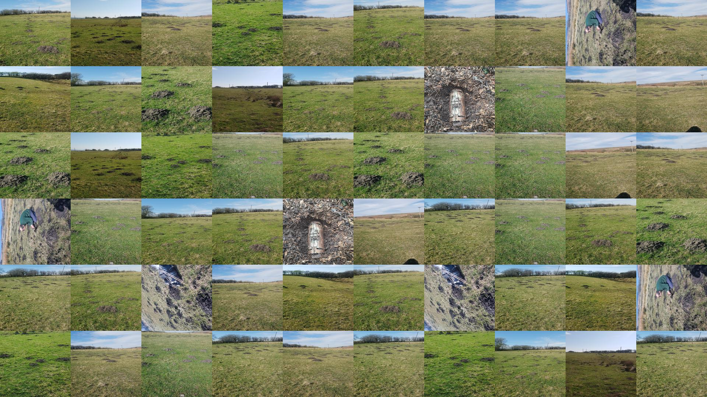
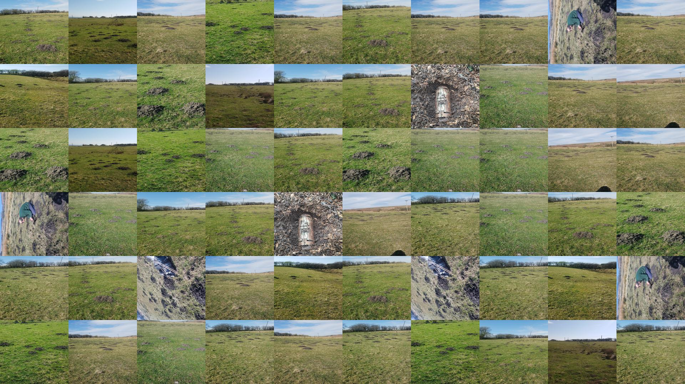

Our Specialist Services

Traditional Mole Catching
We use professional trapping methods only—no poisons, no gassing. 100% safe for pets, horses, and livestock. Guaranteed clearance for domestic lawns, estates, and silage fields.

Agricultural Pest Control
Red Tractor compliant rodent control and wasp nest removal. We provide discreet, effective solutions tailored for farms and rural businesses across the Valleys.


 
